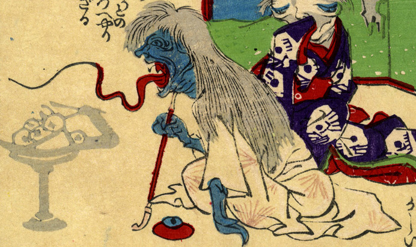

青い肌の化物が、長い煙管を持って座っている。白髪で肌は青く、白い着物を身につけている。大きく開けた口からは、赤く細長い舌が伸びている。手前には食べ物を盛った高坏が置かれている。高杯には腕が生えており、これも化物であることがわかる。
出典：親書誌：U426_nichibunken_0226：化物の嫁入；バケモノノヨメイリ／日付：2010／資源識別子：U426_nichibunken_0226_0001_0000
Copyright (c)2010- International Research Center for Japanese Studies, Kyoto, Japan. All rights reserved.